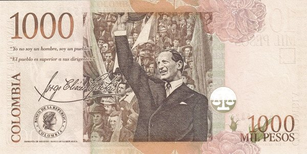

Колумбия - Колумбийское песо
1000 песо
Лицевая сторона - портрет политического и государственного деятеля Хорхе Гайтана
Обратная сторона - Хорхе Гайтан, приветствующий народ
2000 песо
Лицевая сторона - портрет военного и политического деятеля, Франсиско де Паула Сантандера
Обратная сторона - монетный двор
5000 песо
Лицевая сторона - портрет поэта Хосе Сильвы
Обратная сторона - женщина на аллее парка
10000 песо
Лицевая сторона - портрет участницы борьбы за независимость Колумбии, Поликарпы Салавариеты
Обратная сторона - центральная площадь Гуадуаса
20000 песо
Лицевая сторона - портрет астронома Хулио Армеро
Обратная сторона - Земля и геометрические фигуры
50000 песо
Лицевая сторона - портрет политика и писателя Хорхе Исаакса
Обратная сторона - асьенда «Эль Параисо»